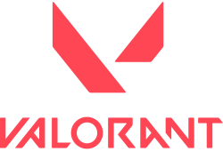

"Los estilos de juegos son las distintas formas en que un videojuego plantea desafíos y experiencias al jugador. Pueden ir desde la estrategia pausada de un juego de rol hasta la acción frenética de un shooter, pasando por la exploración inmersiva de un mundo abierto o la precisión técnica de un juego de plataformas. Cada estilo tiene su propio ritmo, mecánicas y sensaciones que lo hacen único, permitiendo a los jugadores encontrar el tipo de diversión que más disfrutan."
tomate el tiempo en buscar tu estilo de juego, acomodo o historia, hay variedad, lo que importa es la experiencia:
++ ESTILO DE JUEGO INDIE ++
Un estilo de juego indie se refiere a los enfoques creativos y de diseño que suelen caracterizar a los videojuegos independientes ( indie ). Aunque los juegos indie pueden abarcar múltiples géneros y mecánicas, su estilo tiende a destacar por algunas características comunes:
Innovación y originalidad: Al no depender de grandes empresas, los juegos indie exploran ideas frescas, mecánicas únicas y narrativas fuera de lo común.
Dise√±o art√≠stico distintivo üñåÔ∏è: Suelen apostar por estilos visuales llamativos, ya sea pixel art, minimalismo o gr√°ficos estilizados en 2D y 3D.
Experiencias m√°s personales üí°: Muchos juegos independientes reflejan la visi√≥n art√≠stica de peque√±os equipos o incluso de un solo desarrollador.
Jugabilidad enfocada en la esencia üéÆ: En lugar de gr√°ficos ultra realistas o mundos gigantescos, priorizan mec√°nicas bien pulidas y un dise√±o inteligente.
algunos de estos ejemplos como:
AL TRIO LOS PUEDES VER EN LA PORTADA, INTERESANTE NO??, EL QUE TIENE HISTORIA MAS INTERESANTE ES... LOS 3! TE INVITAMOS A QUE LES ECHES UN VISTAZO, DE ACUERDO CON MI MEMORIA, OMORI TAMBIEN OFRECE UN MODO DE JUEGO DONDE JUEGAS A SER UN ,ESERO QUE TRAE COMIDA EXQUISITA POR SUPUESTO... Y HABLANDO DE COMIDAS, QUERIO HABLARLES SOBRE UN PATROCINADOR MUY ESPECIAL QUE PRATOCINA TAMBIEN ESTA PAGINA DE VIDEJUEGOS
ESTA GLORIOSA PAGINA SE HACE LLAMAR
.png) VISITA SU PAGINA DANDO CLIC EN LA IMAGEN, TIENE PLATILLOS EXQUISITOS, ASI COMO UNA GRAN VARIEDAD DE ALIMENTOS POR ELIGIR NO TE ARREPENTIRAS
VISITA SU PAGINA DANDO CLIC EN LA IMAGEN, TIENE PLATILLOS EXQUISITOS, ASI COMO UNA GRAN VARIEDAD DE ALIMENTOS POR ELIGIR NO TE ARREPENTIRAS
++ESTILO FRENETICO++
shooters , un estilo de juego centrado en disparos y combate con armas de fuego o proyectiles. Este género se caracteriza por la acción rápida, la precisión y la estrategia en el combate.
-
Shooter en primera persona (FPS)
-
Shooter en tercera persona (TPS)
-
Dispara a todos (Shmup)
-
Tirador de héroes
-
Batalla real
tales ejemplos como:
- APEX LEGENDS (cotes gratuito, las tarjetas, alrededor de 200 a 1000 $)

- FORTNITE (Coste gratuito, alrededor de 200, la version historia)

- VALORANT (coste gratuito, cosmeticos van desde 200 a 1000 $)

- OVERWATCH (Coste gratuito)

REGRESAR INDEX, CLIC AQUI...